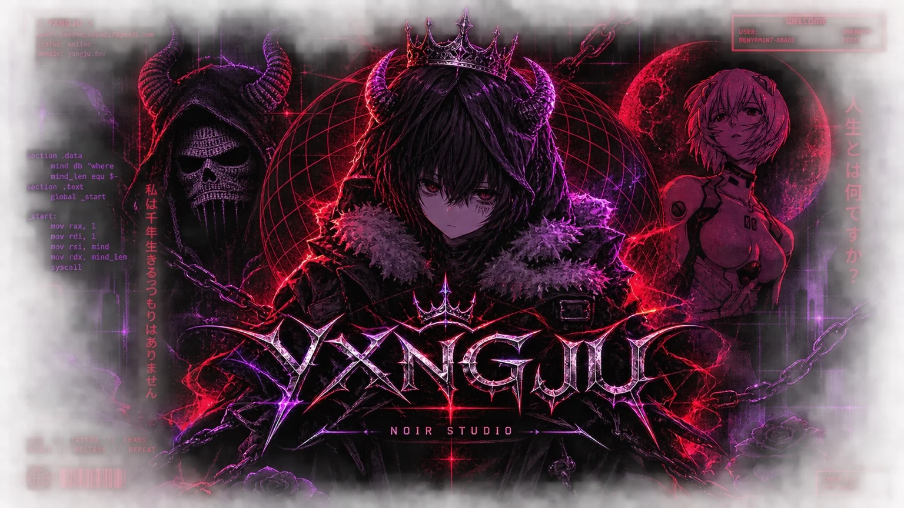
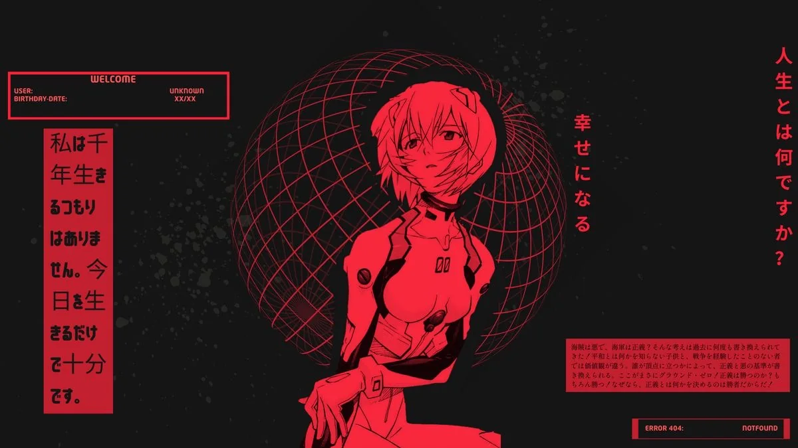
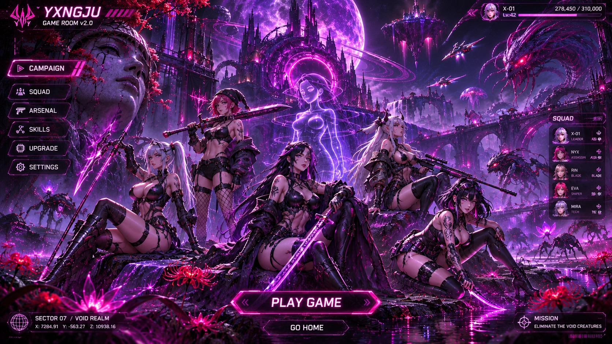

NEXUS
Personal operations workspace
سامانه مدیریت شخصی در حال توسعه
EXPLORE / مشاهدهYXNGJ / DIGITAL IDENTITY — 001
CREATE · EVOLVE · SURVIVE
A living digital world shaped by code, character and imagination. This is the signal. This is our universe.
آخرین وضعیت پروژهها و بخشهای دنیای YXNGJU
Personal operations workspace
سامانه مدیریت شخصی در حال توسعه
EXPLORE / مشاهدهLearning resources and code previews
منابع آموزشی و پیشنمایش کدها
EXPLORE / مشاهدهBrowser arcade experience
بازی آرکید قابل اجرا در مرورگر
PLAY / بازیYXNGJ INTELLIGENCE DIVISION / 001
شخصیت اصلی دنیای YXNGJU
A NEW INTELLIGENCE IS TAKING SHAPE
XAI is a planned 3D AI character being created to talk with you, understand requests and help carry out useful tasks. The goal is a natural, interactive companion with a distinct personality — built step by step.
MOVE CLOSER // THE ENTITY RESPONDS TO YOUR PRESENCE ✦
yxngj // RESEARCH DIVISION 04
A quiet corner of the network. Explore code, inspect examples, learn.
فضایی برای یادگیری برنامهنویسی، مفاهیم شبکه و امنیت سایبری.
// YXNGJ CODE SHOWCASE // Select a code sample below. // It will appear in this editor. const status = "READY"; console.log(status); > _CRT DISPLAY // CODE PREVIEW
YXNGJ CYBER LAB // OFFLINE MODE
This is a visual command simulator. Choose a code sample from the library to load it into the computer.
[✓] No local Python, file-system or network bridge is connected.
Cyber Lab runs entirely in the browser. It does not connect to Python, your computer's file system, or external network services.
yxngj // SNIPPET ARCHIVE
Choose a sample. It will load into the computer's code editor.
یک نمونه را انتخاب کن تا کاربرد واقعی، روش اجرا و نکته امنیتی آن را ببینی.
yxngj SECURITY RESEARCHLEARN ETHICALLY // BUILD RESPONSIBLY


IDENTITY / 01yxngj // CREATOR PROFILE · پروفایل سازنده
Cybersecurity · Web Design · Digital Experiences
ENGLISH
I'm YXNGJ — a cybersecurity enthusiast and digital creator focused on website design, web security and interactive experiences. I explore how digital systems work, how to protect them, and how thoughtful design can make technology feel clear and alive.
فارسی
من YXNGJ هستم؛ در زمینه امنیت سایبری، طراحی وبسایت و امنیت وب فعالیت میکنم. به ساخت تجربههای دیجیتال تعاملی، بررسی امنیت سیستمها و ترکیب طراحی بصری با فناوری علاقهمندم. این وبسایت فضایی برای نمایش پروژهها، آزمایشها و کارهای من است.
Cybersecurity research, website design, web security and digital experiments.
پژوهش و یادگیری امنیت سایبری، طراحی وبسایت، امنیت وب و اجرای ایدههای دیجیتال.
This is my personal portfolio and experimental space. I share selected projects, visual work, interfaces and things I'm building or exploring.
اینجا پورتفولیوی شخصی من است؛ جایی برای انتشار پروژهها، طراحیها، رابطهای کاربری و تجربههایی که میسازم یا بررسی میکنم.
For collaborations, questions or project inquiries, reach out:
برای همکاری، پرسش یا صحبت درباره پروژهها از راههای زیر پیام بده:
INSTAGRAM@yxngj ↗ TELEGRAMt.me/yxngj ↗راهنمای کوتاه برای پیدا کردن بخشهای مختلف سایت و استفاده از امکانات آن.
Use the side menu to move between X-01, Play Game, Cyber Lab, NEXUS, Projects and Contact.
از منوی کناری برای رفتن به بخش شخصیت، بازیها، آزمایشگاه، نکسوس، پروژهها و ارتباط استفاده کن.
Open Search in the top bar to find pages, projects and available experiences by keyword.
از جستوجوی بالای سایت برای پیدا کردن صفحهها، پروژهها و تجربههای موجود با کلمه کلیدی استفاده کن.
Open Projects to search the archive or filter by software, learning, games and digital identity.
در آرشیو پروژهها میتوانی جستوجو کنی یا پروژهها را بر اساس دستهبندی جدا کنی.
Choose Play Game, open an experience and follow the controls shown inside the game.
برای بازی وارد بخش بازیها شو، تجربه موردنظر را باز کن و راهنمای کنترل داخل بازی را دنبال کن.
Explore lessons and code examples. The current console is a visual simulator and does not execute real commands or code.
نمونهکدها و آموزشها را بررسی کن. کنسول فعلی فقط شبیهساز بصری است و فرمان یا کد واقعی اجرا نمیکند.
Account access is a UI preview until Supabase authentication is configured. Do not treat the current account page as active sign-in.
صفحه حساب تا زمان اتصال و پیکربندی Supabase فقط پیشنمایش است؛ ورود واقعی هنوز فعال نیست.
Explore interactive experiences built inside the YXNGJU universe.
به دنیای بازیهای YXNGJU وارد شو؛ تجربههای تعاملی و جهانهایی که در حال توسعه هستند.

A browser arcade challenge. Pilot your ship, avoid hostile units and survive as long as you can.
یک بازی آرکید تحت مرورگر؛ سفینهات را هدایت کن، از دشمنها دوری کن و تا جایی که میتوانی زنده بمان.
LAUNCH GAME ↗ اجرای بازیNEXUS is a personal operations workspace for planning, projects, finance and intelligent tools.
NEXUS یک فضای یکپارچه برای برنامهریزی، مدیریت پروژهها، امور مالی و ابزارهای هوشمند است.
Tasks, goals, habits and reminders.
مدیریت کارها، هدفها، عادتها و یادآورها.
Keep projects, milestones and progress in one place.
پروژهها، مراحل و میزان پیشرفت را یکجا مدیریت کن.
Track income, expenses and financial reports.
درآمد، هزینهها و گزارشهای مالی را دنبال کن.
Connect supported AI tools with clear permissions.
اتصال ابزارهای هوش مصنوعی با دسترسیهای شفاف.
A growing collection of digital products, interactive experiments and creative work.
مجموعهای در حال گسترش از محصولات دیجیتال، تجربههای تعاملی و کارهای خلاقانه.
4 PROJECTS / ۴ پروژه
A personal operations system connecting planning, projects, finance and intelligent tools.
سامانه مدیریت شخصی برای برنامهریزی، پروژهها، امور مالی و ابزارهای هوشمند.
VIEW PROJECT ↗ مشاهده پروژهA learning space for code samples and cybersecurity concepts. It is a visual simulator, not a live code execution environment.
فضای آموزشی برای نمونهکدها و مفاهیم امنیت سایبری؛ محیط فعلی شبیهساز بصری است و کد را اجرا نمیکند.
EXPLORE LAB ↗ ورود به آزمایشگاهA browser-based arcade game set in the YXNGJU universe.
بازی آرکید مرورگری در دنیای YXNGJU.
PLAY NOW ↗ شروع بازیThe signature character and visual identity of this digital universe.
شخصیت اصلی و هویت بصری این دنیای دیجیتال.
MEET X-01 ↗ مشاهده شخصیتHave an idea, a question or a project in mind? Get in touch.
ایدهای داری، سؤالی هست یا میخواهی درباره یک پروژه صحبت کنیم؟ از راههای زیر پیام بده.